Overview
The ProcessMaker Mobile app provides access to cases anytime, anywhere. Create and respond to cases, while using features that are only available for mobile devices like QR scanners or Geo-localization.
Minimum Requirements
To install the ProcessMaker Mobile app on your iOS device, check whether your device meets the minimum requirements shown below. The ProcessMaker application supports the following configurations on smartphones:
- iOS 7.0 or later * (Including the following devices)
- iPhone v.4 or later
- iPad
- iPhone touch
Restriction
Please take into consideration the following restriction: The SAML Auth plugin with OneLogin IDP (Identity Provider) cannot connect with the iOS version of PM Mobile.
Getting ProcessMaker Mobile from the App Store
Users can download ProcessMaker Mobile from the Play Store app on the device or by going to this link.
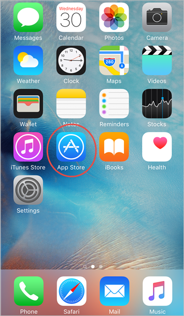
Go to the Search option to look for the ProcessMaker application.
Start typing "ProcessMaker", and the first option that appears is the ProcessMaker Mobile application, which must be tapped to proceed with the installation. Observe the image below:
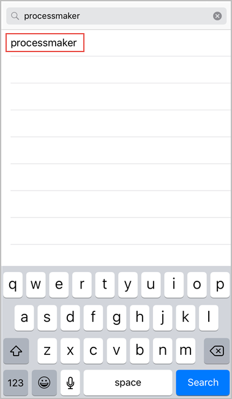
Now, it is possible to download the ProcessMaker app by tapping on the GET button.
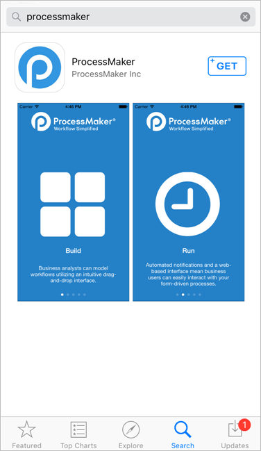
Tap the GET button and a new button appears on its place: the INSTALL button. Tap on it to start downloading the application onto your device.
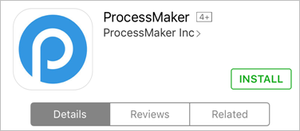
The installation may take a few moments (depending on the space left on your device).
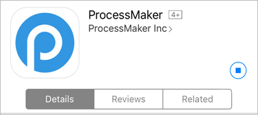

When is ready the button changes to an OPEN button. Open the application from here to use it immediately.
ProcessMaker Mobile can also be open by tapping on the icon that was created on the main screen.

Entering ProcessMaker Mobile
Enter the ProcessMaker Mobile application by tapping the icon that was created the moment the application was installed.
When the application opens, it shows a summary of the application's features. Each of the screens show a brief description of what ProcessMaker can do, like the image below:
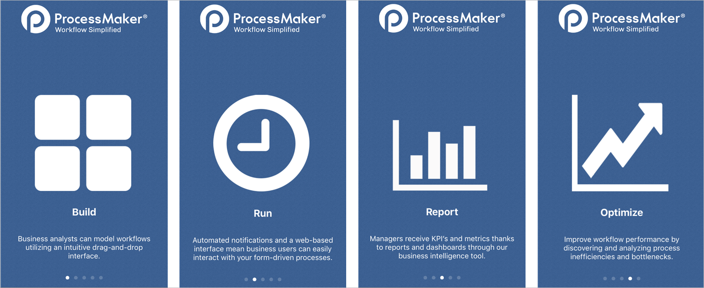
The last screen is a login screen. The screens summarizing ProcessMaker's features do not appear after starting the app for the first time; the login screen appears instead. If you have a ProcessMaker account, then tap on the Login button, otherwise, tap on the Register button.
Note: When updating the ProcessMaker Mobile app, remember that the application depends on the release of the new version of ProcessMaker. Many of the application functions change with the update of the ProcessMaker Web Edition, meaning that the ProcessMaker Mobile app must be used with the latest version of ProcessMaker, we recommend disabling automatic updates to avoid any inconvenience.
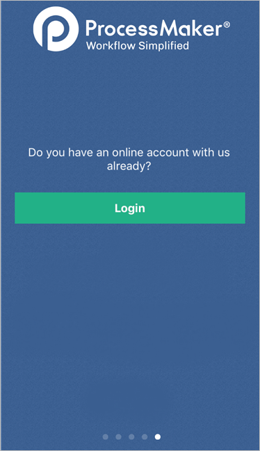
If the Register button is clicked, a new window appears where a new account can be created by entering the first name, last name, and business email into the fields displayed. Tap on Continue after filling in the information.
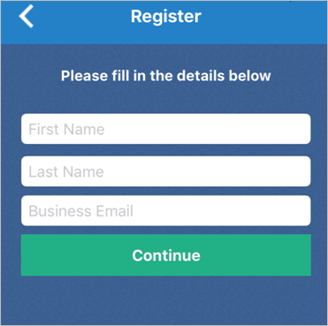
Tap on Login if you already have an account or want to sign in with a Google account.

The Case List
This section discusses how to use the case list, as well as several other options when running a case on a ProcessMaker Mobile version of iOS. After you log on, the Inbox screen displays.

Slide the screen to the right to display a menu where all available options for the app can be found as seen in the image below.
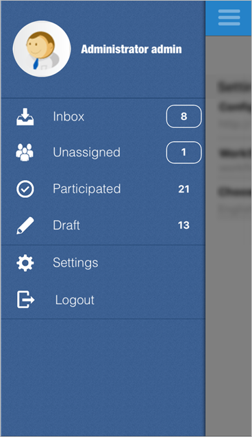
Using the Case List
Work with cases directly from the ProcessMaker Mobile app using the Case List button. The Case List button is in the upper left side of the screen; it is the icon that has three horizontal lines.
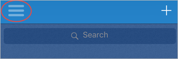
When this button is tapped a new screen appears on the left side of the screen. Here, you can see everything happening with your processes. The options in the Case List are the following:
Each of these are explained in the following sections.
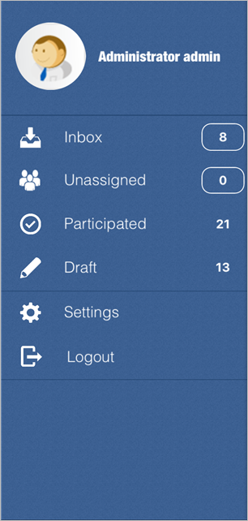
Inbox
The Inbox screen displays the list of all the cases assigned to you in the ProcessMaker desktop version. The cases are initially ordered first by their case number and then by the name of the case. Choose a case in the Inbox and tap on it.
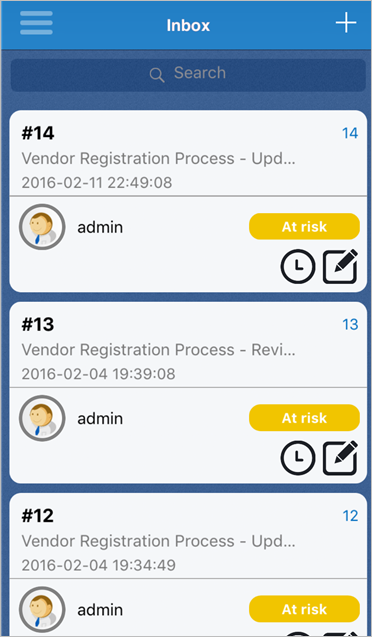
If the first case is tapped on, it opens so you can start working on it as in ProcessMaker web edition.
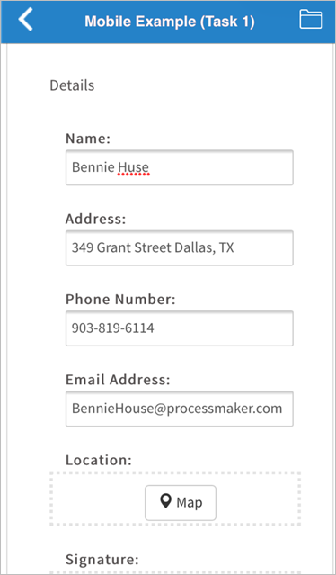
The case statuses are "On time", "At risk" or "Overdue", as seen on the image below.

Unassigned
The Unassigned panel displays all cases that can be claimed by a pool of users assigned to the task. You can assign yourself a task, which then removes it from the Unassigned panel. When there are cases in the Unassigned panel, then anyone can claim the case to work on it. Once opened, details about the unassigned case, like the status, date, description and more, are shown.
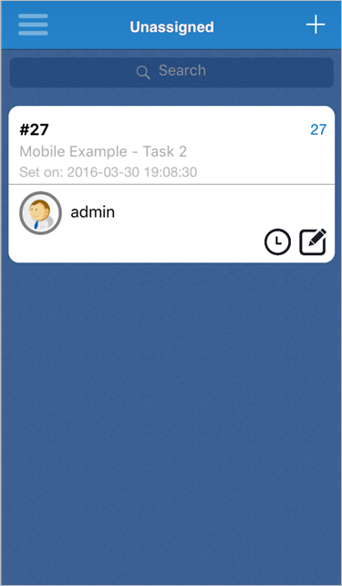
Tap on the Claim this case button to assign the case to yourself and start working on it.

Draft
The Draft panel displays cases that are being edited, but have not yet been submitted. A case becomes a draft after case data is submitted via a Dynaform, an input document is uploading, or after moving to a subsequent step in the current task.
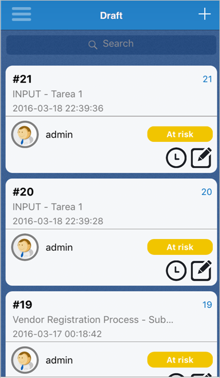
Continue working on a case draft by tapping on it. The Dynaform of that case immediately displays.
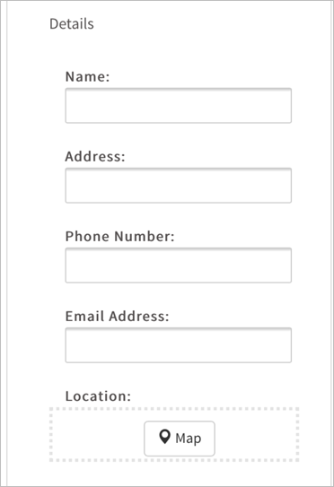
Participated
The Participated panel displays all cases in which you have participated.
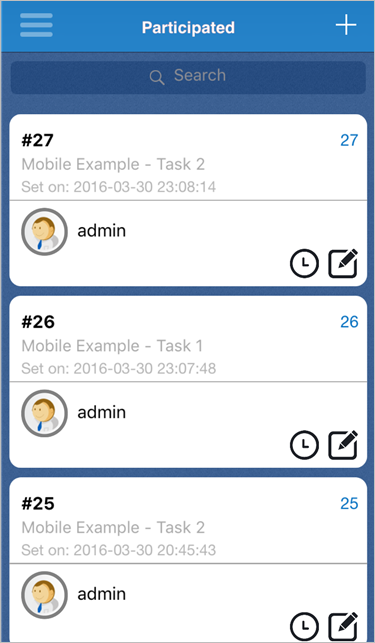
When any "Participated" case is tapped on, the information about the case displays, including but not limited to the creation date, the last date updated, the owner, and the name of the process.
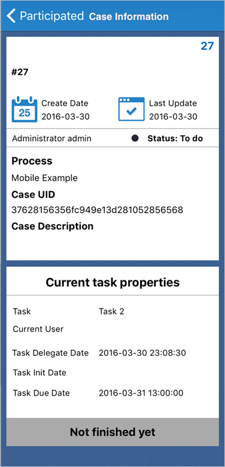
New Case
Note: The Output Document, Input Document, and External Step features are not available for ProcessMaker Mobile as step: they will not open or create the case if any of those features are on the first task of the display list. If a process has a Dynaform and then any of the features follows as step on the display list, the ProcessMaker Mobile version skips that part and continues. These features will be implemented in future versions.
The ProcessMaker Mobile app allows you to create a new case of a process previously created in the ProcessMaker Web Edition. The New Case list displays all the cases that you have been designated to participate in, but have not yet begun. To start a case, tap on the plus sign button located at the bottom of the screen marked with a red circle.
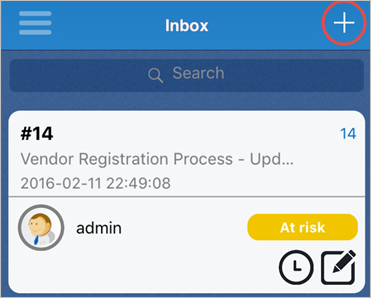
All of your available processes are listed, and any of them can be started by tapping on the process.
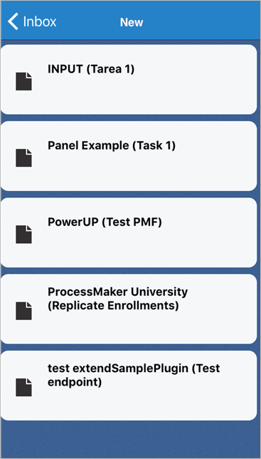
When a case is tapped, the process starts with the first task or the current task that the process is in, similarly to the standard version of ProcessMaker.
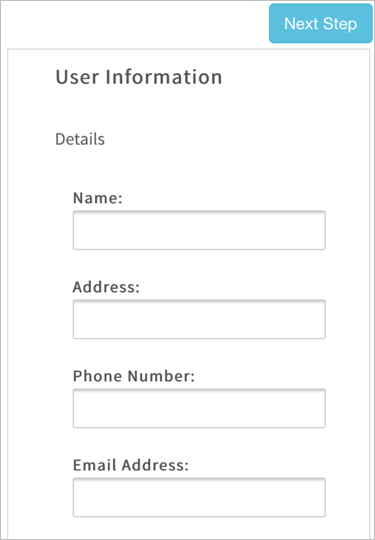
Search for a Process
The ProcessMaker Mobile app allows users to search for a process in the list of processes. Search for a process by tapping on the search box located at the top of the screen.
If you type the name of a process, the processes list is filtered based on the search input.
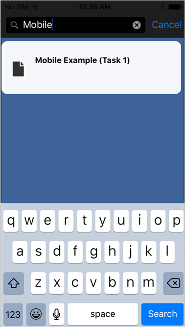
Additional Options
Aside from the case list, the following sections describe additional options:
Logout
Go to the main menu by sliding the screen to the right. Locate the Logout button.
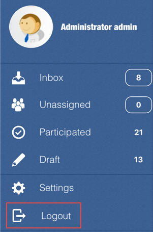
After tapping the Logout button, a screen displays to confirm you want to log out. If you log out, any unsaved case information is erased. Tap on OK to quit the ProcessMaker Mobile app or tap on Cancel to go back to the main screen.
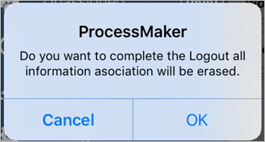
About
Go to the main menu by sliding the screen to the right. Click on the About button.
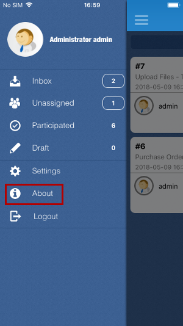
A screen displays that shows the version of the application and the code of the build. Tap on OK to quit the window and go back to the main screen.
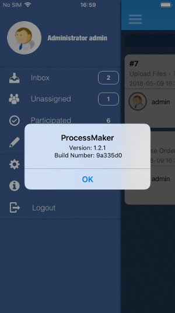
Case Notes
Add a case note to a case by tapping on the clock-pencil icon in the bottom right corner of any case.
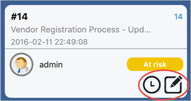
A window of options pops-up. From there, select Case notes or tap on Cancel to exit.
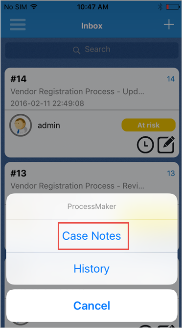
When the Cases Notes option is selected, a new window opens where notes can be added.
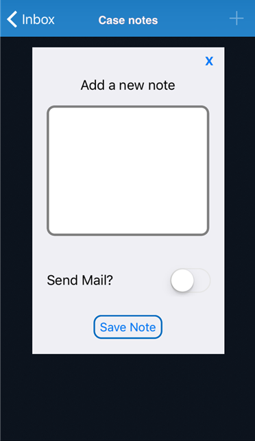
In the Add a new note section, add any note that applies to the case. Slide the Send Mail button to the right to send the mail. Finally, click on the Save Note button to store the note added.
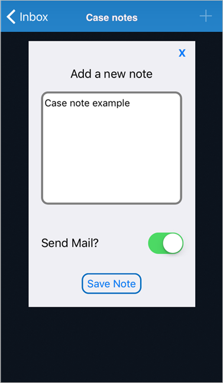
History
Observe the history of a case by tapping on the square with a pencil icon in the bottom right corner of any case.
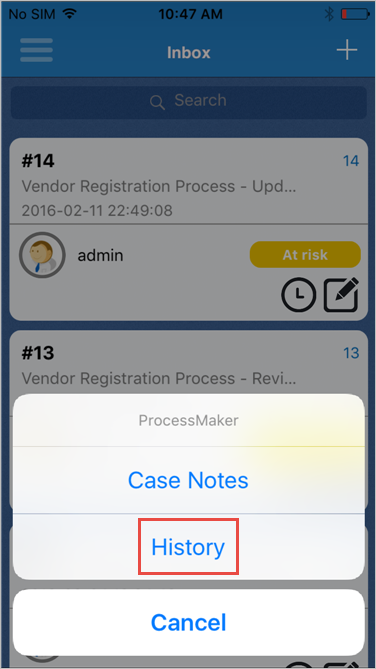
A new window with the history of the case displays. This displays the name, the person assigned, the status and the date and time of the tasks.
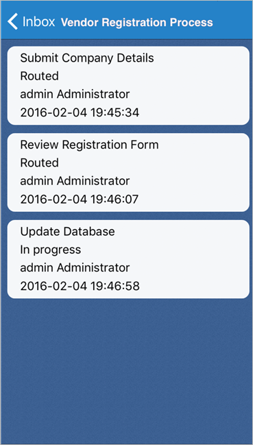
Dynaform Controls on ProcessMaker Mobile
When running cases, end users only interact with Dynaforms when inputting data into the form, viewing information sent from other users or viewing information that has been automatically generated by the execution of triggers or JavaScript in the project. For more information, see Mobile Controls.
Uninstalling ProcessMaker Mobile
Uninstall ProcessMaker Mobile from the device by tapping on its icon without letting it go for a few seconds. All applications available to be uninstalled have a blue cross in the upper left part of their icon.

Tap on the "x" in the top left corner of the ProcessMaker icon and a confirmation screen appears. Tap on the Delete button to erase ProcessMaker Mobile from your device.
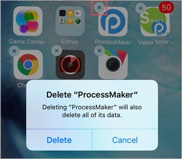